30+ Christmas Cookie Recipes Everyone Will Love
📌 Save to Pinterest
Christmas cookies are the best part of holiday baking: the kitchen smells like cinnamon and butter, the trays come out golden, and everyone has a favorite. This roundup gathers thirty cookie recipes that everyone will love — the classics your grandmother made, rich chocolate cookies, warm spiced gingerbread, filled sandwich cookies, and the decorated ones that look like they came from a bakery. Bake one batch or bake them all; either way, the cookie jar will not stay full for long.
How to pick your Christmas cookies
Pick a mix, not a single style: a crisp cookie, a soft cookie, a chocolate cookie, and a spiced cookie cover every taste. If you are baking with kids, choose cut-outs and decorated cookies — they are the most fun to make. If you are gifting, choose cookies that travel well and keep for days, like shortbread, biscotti-style bakes, and sturdy gingerbread. And if you are short on time, pick drop cookies and bars over rolled and cut cookies — they bake faster and still taste like Christmas.
Good to know: Everything is written in American English, and measurements use US customary units — cups, tablespoons, and Fahrenheit — for cooks in the United States. Always follow safe food-handling guidance, and check labels for allergens when baking for others.
Food safety: the eggs in these cookies are baked through — bake until set and golden. For egg dishes, the USDA safe temperature is 160°F (71°C)..
Classic Christmas cookies
These are the cookies most people picture when they think of Christmas baking — the ones that have been on the table for generations.
1. Classic Sugar Cookies
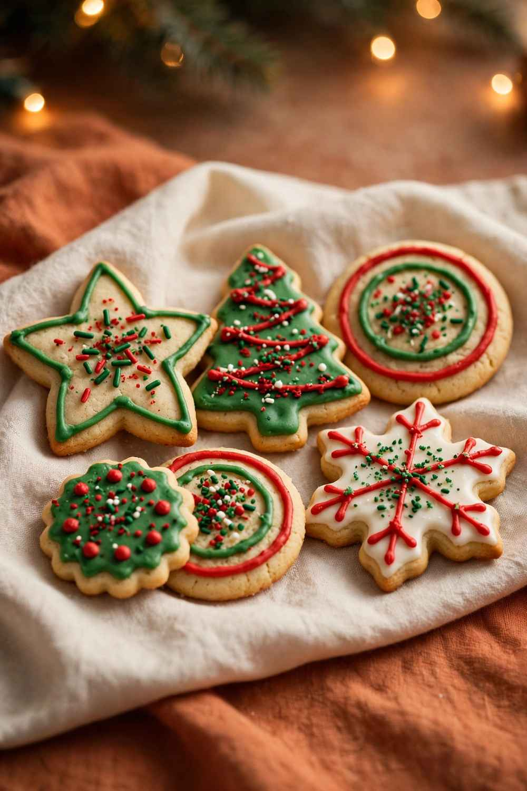
These soft, buttery sugar cookies are the blank canvas of Christmas baking, tender in the middle with lightly crisp edges and just a hint of vanilla and almond. Rolled and cut into trees, stars, and snowmen, they hold their shape beautifully in the oven. Ice them, sprinkle them, and let everyone at the table decorate their own batch.
Ingredients
- 2 3/4 cups all-purpose flour
- 1 teaspoon baking soda
- 1/2 teaspoon baking powder
- 1 cup unsalted butter, softened
- 1 1/2 cups granulated sugar
- 1 large egg
- 2 teaspoons vanilla extract
- 1/2 teaspoon almond extract (optional)
- 1/4 teaspoon salt
- Colored icing and sprinkles, for decorating
Directions
- Whisk the flour, baking soda, baking powder, and salt together in a medium bowl.
- Beat the softened butter and sugar on medium speed until light and fluffy, about 3 minutes.
- Beat in the egg, vanilla, and almond extract if using, until smooth.
- Add the dry ingredients in two additions, mixing on low just until a soft dough forms.
- Shape the dough into a disc, wrap it, and chill for 1 hour until firm.
- Roll the dough to 1/4 inch thick on a floured surface and cut into shapes. Place 2 inches apart on lined sheets.
- Bake at 350°F for 8 to 10 minutes, until the edges are set and barely golden. Cool 5 minutes on the tray, then move to a rack.
- Once completely cool, decorate with icing and sprinkles, and let the icing set before stacking.
2. Snickerdoodles

Soft and chewy with a crackled, cinnamon-sugar crust, snickerdoodles are pure comfort in cookie form. The cream of tartar gives them their signature tang and pillowy texture, while the cinnamon sugar coating bakes into a sweet, spiced shell. Warm from the oven, they are impossible to stop at just one.
Ingredients
- 2 3/4 cups all-purpose flour
- 2 teaspoons cream of tartar
- 1 teaspoon baking soda
- 1/2 teaspoon salt
- 1 cup unsalted butter, softened
- 1 1/2 cups granulated sugar
- 2 large eggs
- 2 teaspoons vanilla extract
- 1/4 cup granulated sugar + 2 teaspoons ground cinnamon, for rolling
Directions
- Whisk the flour, cream of tartar, baking soda, and salt together in a medium bowl.
- Beat the softened butter and sugar on medium speed until light and fluffy, about 3 minutes.
- Beat in the eggs one at a time, then beat in the vanilla until smooth.
- Add the dry ingredients and mix on low just until a soft dough forms.
- Cover and chill the dough for 30 minutes, until firm enough to roll.
- Stir the rolling sugar and cinnamon together. Roll the dough into 1 1/2-inch balls, then roll each in the cinnamon sugar.
- Place 2 inches apart on lined sheets and bake at 350°F for 10 to 12 minutes, until the edges are set and the centers are soft.
- Cool 5 minutes on the tray, then move to a rack. The centers settle into soft, chewy middles as they cool.
3. Buttery Shortbread
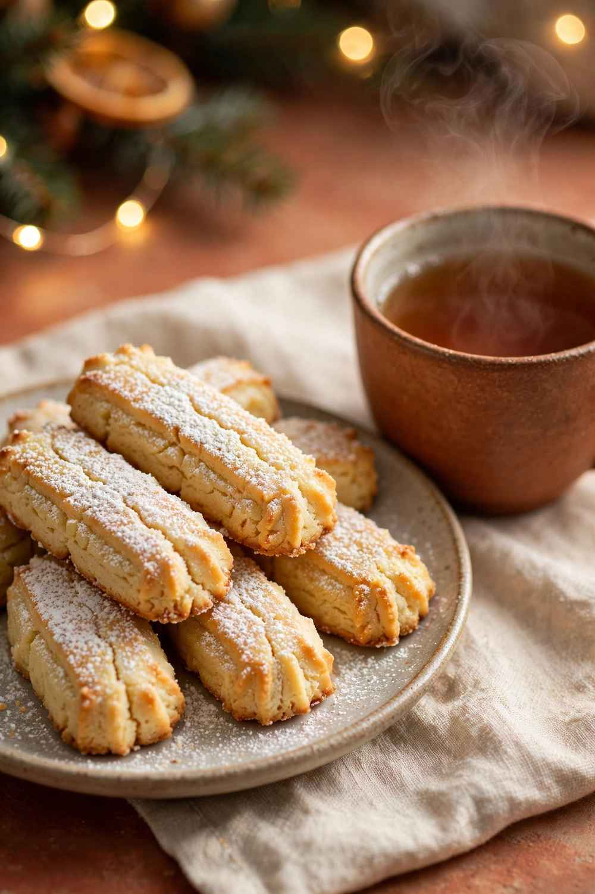
Rich, crumbly, and meltingly tender, this shortbread is proof that the simplest cookies are often the best. Real butter and a touch of powdered sugar give it a delicate, sandy crumb that practically dissolves on the tongue. It keeps for days, travels beautifully, and pairs perfectly with a hot cup of tea.
Ingredients
- 2 cups all-purpose flour
- 1 cup unsalted butter, softened
- 1/2 cup granulated sugar
- 1/2 cup powdered sugar
- 1 teaspoon vanilla extract
- 1/4 teaspoon salt
- Coarse sugar, for sprinkling
Directions
- Beat the softened butter, both sugars, and vanilla on medium speed until creamy and smooth, about 2 to 3 minutes.
- Add the flour and salt and mix on low just until a soft dough forms. Do not overmix, or the shortbread will turn tough.
- Shape the dough into a 2-inch-thick log, or press it into a lined 8-inch square pan. Wrap and chill for 30 minutes.
- Slice the log into 1/4-inch rounds, or cut the pan dough into fingers. Place on lined baking sheets.
- Bake at 325°F for 18 to 20 minutes, until the edges are pale golden and the centers look set.
- Sprinkle with coarse sugar while still warm, then cool completely on the tray. The cookies are delicate when hot and firm up as they cool.
4. Gingerbread Men

The cookie that defines Christmas baking: warmly spiced with ginger, cinnamon, cloves, and nutmeg, with a deep molasses sweetness and a sturdy, tender crumb. These gingerbread men hold their shape for decorating, take icing smiles and candy buttons beautifully, and fill the whole house with the smell of the holidays.
Ingredients
- 3 1/4 cups all-purpose flour
- 1 tablespoon ground ginger
- 2 teaspoons ground cinnamon
- 1/2 teaspoon ground cloves
- 1/2 teaspoon nutmeg
- 1 teaspoon baking soda
- 1/2 teaspoon salt
- 3/4 cup unsalted butter, softened
- 3/4 cup packed brown sugar
- 1 large egg
- 1/2 cup molasses
- 1 teaspoon vanilla extract
- Royal icing and candies, for decorating
Directions
- Whisk the flour, spices, baking soda, and salt together in a medium bowl.
- Beat the softened butter and brown sugar on medium speed until light and fluffy, about 3 minutes.
- Beat in the egg, molasses, and vanilla until smooth and well blended.
- Add the dry ingredients in two additions, mixing on low just until a firm dough forms. Shape into two discs, wrap, and chill for 2 hours.
- Roll one disc at a time to 1/4 inch thick and cut out gingerbread men. Place 2 inches apart on lined sheets.
- Bake at 350°F for 9 to 11 minutes, until the edges are firm and the centers look set. Cool 5 minutes on the tray, then move to a rack.
- Once completely cool, decorate with royal icing and candies, pressing the candies in while the icing is wet. Let it dry fully before stacking.
5. Classic Butter Cookies

Delicate piped butter cookies that melt in your mouth, with a rich, buttery flavor and a tender crumb that feels straight from a bakery tin. Piped into rosettes and swirls, they look elegant with almost no effort and take sprinkles or coarse sugar beautifully. They disappear from the tin just as fast as you fill it.
Ingredients
- 2 cups all-purpose flour
- 1 cup unsalted butter, softened
- 3/4 cup granulated sugar
- 1 large egg yolk
- 2 teaspoons vanilla extract
- 1/4 teaspoon salt
- Sprinkles or coarse sugar, for decorating
Directions
- Beat the softened butter and sugar on medium speed until light and fluffy, about 3 minutes, scraping down the sides.
- Beat in the egg yolk, vanilla, and salt until smooth and creamy.
- Add the flour and mix on low just until combined and a soft, pipeable dough forms. Do not overmix.
- Fit a piping bag with a large open star tip and fill it with dough. Pipe rosettes and swirls about 1 1/2 inches wide onto lined sheets, 2 inches apart.
- Chill the piped cookies on the sheets for 20 minutes, so they hold their shape in the oven.
- Bake at 350°F for 10 to 12 minutes, until the edges are lightly golden and the centers look set.
- Cool completely on the tray, then decorate with sprinkles or coarse sugar if you like. Store in an airtight tin.
6. Spritz Cookies

Buttery pressed cookies in festive shapes — trees, wreaths, and snowflakes — made fast with a cookie press and finished with colored sugar. They are crisp at the edges, tender in the middle, and as pretty as they are delicious. A tin of spritz cookies is the easiest way to make a holiday cookie tray look spectacular.
Ingredients
- 2 1/4 cups all-purpose flour
- 1 cup unsalted butter, softened
- 3/4 cup granulated sugar
- 1 large egg
- 1 teaspoon vanilla extract
- 1/2 teaspoon almond extract
- 1/4 teaspoon salt
- Colored sugar and sprinkles, for decorating
Directions
- In a large bowl, beat the softened butter and granulated sugar on medium speed until light and fluffy, about 3 minutes.
- Beat in the egg, vanilla extract, and almond extract until smooth.
- Add the flour and salt and mix on low speed just until a smooth, soft dough forms with no dry streaks. It should be soft enough to press, not stiff.
- Fill a cookie press fitted with your chosen disc and press the shapes directly onto ungreased baking sheets, holding the press flat and lifting straight up.
- Sprinkle the shaped cookies with colored sugar and sprinkles before baking.
- Bake at 375°F for 8 to 10 minutes, until the edges are lightly golden and the centers look set.
- Cool on the tray for 5 minutes, then move to a wire rack to cool completely before stacking.
Chocolate cookies
For the chocolate lovers at the table — rich, fudgy, and best eaten warm from the oven.
7. Chocolate Crinkle Cookies
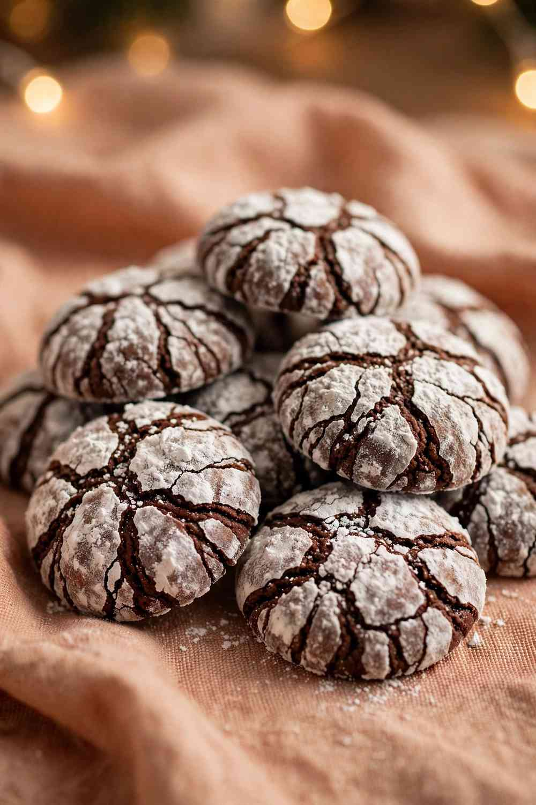
Deep, fudgy chocolate cookies rolled in powdered sugar so they crackle like snow as they bake. The outside is crisp and crackled, the inside stays soft and brownie-like, and the snowy white coating makes them look like winter itself. They are the cookie that belongs on every Christmas tray.
Ingredients
- 1 cup unsweetened cocoa powder
- 2 cups granulated sugar
- 1/2 cup vegetable oil
- 4 large eggs
- 2 teaspoons vanilla extract
- 2 cups all-purpose flour
- 2 teaspoons baking powder
- 1/2 teaspoon salt
- 1 cup powdered sugar, for rolling
Directions
- Whisk the cocoa, sugar, and oil together in a large bowl until smooth and glossy.
- Beat in the eggs one at a time, then beat in the vanilla until fully combined.
- Stir in the flour, baking powder, and salt just until a soft, sticky dough forms.
- Cover and chill the dough for 2 hours, until firm enough to roll. Do not skip the chill, or the cookies will spread flat.
- Roll the chilled dough into 1-inch balls, then roll each generously in powdered sugar until thickly coated.
- Place 2 inches apart on lined sheets and bake at 350°F for 10 to 12 minutes, until the tops are crackled and the edges look set.
- Cool 5 minutes on the tray, then move to a wire rack to cool completely.
8. Double Chocolate Chip Cookies

Soft, dark, and loaded with chocolate chips, these cookies are chocolate on chocolate done right. The edges turn crisp while the centers stay gooey, and every bite has a pocket of melted semisweet chocolate. Serve them warm with a glass of milk for the full effect.
Ingredients
- 2 1/4 cups all-purpose flour
- 1/2 cup unsweetened cocoa powder
- 1 teaspoon baking soda
- 1/2 teaspoon salt
- 1 cup unsalted butter, softened
- 3/4 cup granulated sugar
- 3/4 cup packed brown sugar
- 2 large eggs
- 2 teaspoons vanilla extract
- 2 cups semisweet chocolate chips
Directions
- Whisk the flour, cocoa, baking soda, and salt together in a medium bowl.
- Beat the softened butter and both sugars on medium speed until light and fluffy, about 3 minutes.
- Beat in the eggs one at a time, then beat in the vanilla until smooth.
- Add the dry ingredients and mix on low just until combined, then fold in the chocolate chips.
- Cover and chill the dough for 30 minutes, until firm enough to scoop.
- Scoop rounded tablespoons of dough onto lined sheets, spacing them 2 inches apart.
- Bake at 350°F for 10 to 12 minutes, until the edges are set but the centers still look slightly soft. They finish setting on the hot tray.
- Cool 5 minutes on the tray, then move to a wire rack to cool completely.
9. Chocolate Peppermint Cookies

Rich chocolate cookies with a cool peppermint finish and a sparkle of crushed candy cane on top. The peppermint is gentle, not overpowering, so the deep chocolate flavor still leads, and the candy cane adds a festive crunch. They taste like Christmas in a cookie.
Ingredients
- 2 cups all-purpose flour
- 1/2 cup unsweetened cocoa powder
- 1 teaspoon baking soda
- 1/2 teaspoon salt
- 1 cup unsalted butter, softened
- 1 cup granulated sugar
- 1 large egg
- 1 teaspoon vanilla extract
- 1/2 teaspoon peppermint extract
- 1/2 cup crushed candy cane, for topping
Directions
- In a medium bowl, whisk the flour, cocoa powder, baking soda, and salt together until evenly combined.
- In a large bowl, beat the softened butter and granulated sugar on medium speed until light and fluffy, about 3 minutes.
- Beat in the egg, vanilla extract, and peppermint extract until smooth.
- Add the dry ingredients and mix on low speed just until a soft dough forms and no flour streaks remain.
- Scoop rounded tablespoons of dough onto lined baking sheets, spacing them 2 inches apart, and flatten each scoop slightly with your palm.
- Bake at 350°F for 9 to 11 minutes, until the edges are set and the centers look soft but no longer wet.
- While the cookies are still warm on the tray, sprinkle crushed candy cane over the tops so it sticks as they cool. Cool completely before stacking.
10. Brownie Cookies
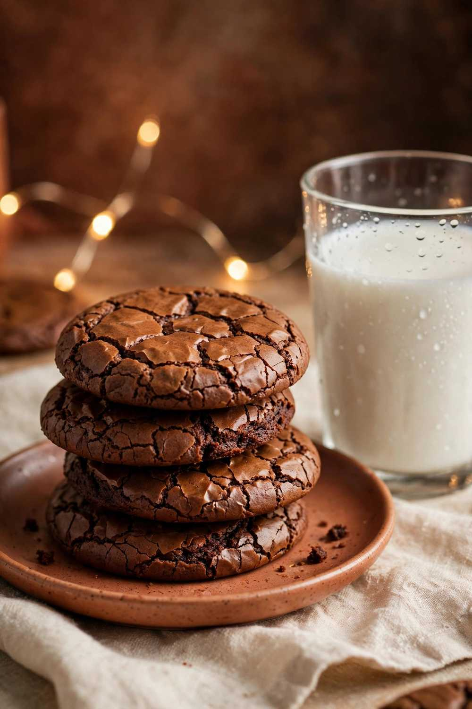
All the fudgy richness of a brownie in a cookie shape, with a shiny crackled top and a soft, dense center studded with chocolate chips. They are best eaten warm, when the chocolate is still soft, with a glass of cold milk. One batch is never enough.
Ingredients
- 1 cup semisweet chocolate chips
- 1/2 cup unsalted butter
- 1 cup granulated sugar
- 2 large eggs
- 1 teaspoon vanilla extract
- 1 cup all-purpose flour
- 1/4 cup unsweetened cocoa powder
- 1 teaspoon baking powder
- 1/2 teaspoon salt
- 1 cup chocolate chips
Directions
- Melt the chocolate chips and butter in 30-second bursts, stirring between each, until smooth. Cool slightly for 5 minutes.
- Whisk in the sugar, then whisk in the eggs one at a time, followed by the vanilla, until the batter is glossy.
- Stir in the flour, cocoa, baking powder, and salt just until combined.
- Fold in the chocolate chips until evenly spread through the batter.
- Cover and chill the dough for 30 minutes, until firm enough to scoop.
- Scoop rounded tablespoons of dough onto lined sheets, spacing them 2 inches apart.
- Bake at 350°F for 10 to 12 minutes, until the tops are shiny and crackled and the edges look set.
- Cool 5 minutes on the tray, then move to a wire rack to cool completely.
11. Chocolate-Dipped Shortbread

Buttery shortbread fingers dipped in dark chocolate and finished with a sprinkle of flaky sea salt. The shortbread is crumbly and rich, the chocolate coating adds a snap and a deep cocoa note, and the salt makes every flavor pop. Simple, elegant, and made for gifting.
Ingredients
- 2 cups all-purpose flour
- 1 cup unsalted butter, softened
- 1/2 cup powdered sugar
- 1 teaspoon vanilla extract
- 1/4 teaspoon salt
- 1 1/2 cups dark chocolate chips
- 1 teaspoon vegetable oil
- Flaky sea salt, for sprinkling
Directions
- Beat the softened butter, powdered sugar, and vanilla on medium speed until creamy and smooth, about 2 to 3 minutes.
- Add the flour and salt and mix on low just until a soft dough forms.
- Shape the dough into fingers about 3 inches long and 1 inch wide, place on lined sheets, and chill for 30 minutes.
- Bake at 325°F for 16 to 18 minutes, until pale golden at the edges.
- Cool completely on the tray before dipping, or the chocolate will slide off and the fingers may break.
- Melt the dark chocolate with the oil in 30-second bursts, stirring until smooth. Dip one end of each finger, let the excess drip off, and set on parchment.
- Sprinkle flaky sea salt over the chocolate before it sets, then let the fingers sit until the chocolate is firm.
12. Hot Cocoa Cookies
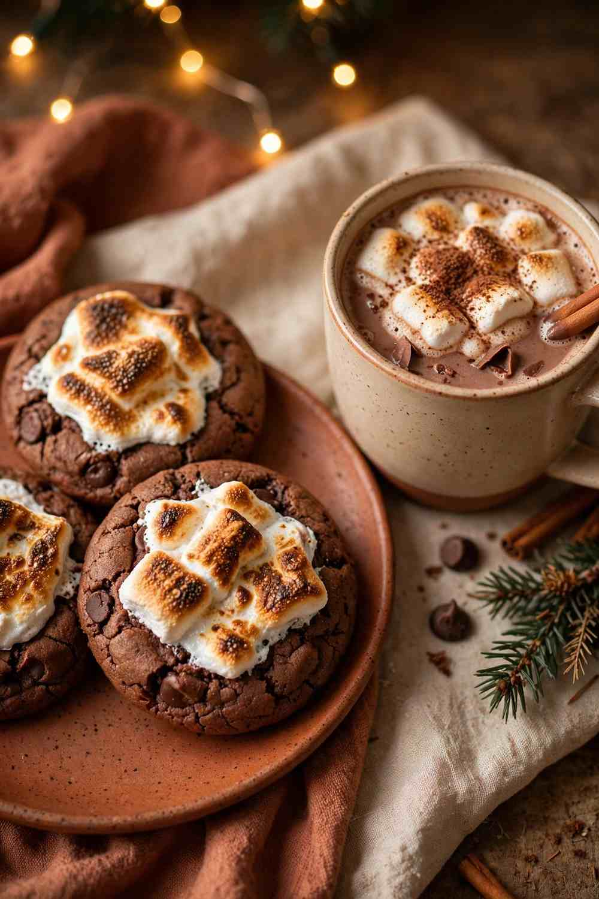
Chocolate cookies topped with a soft marshmallow that melts into the top as they bake, so they taste exactly like a mug of hot cocoa. The cookie is rich and chocolatey, the marshmallow goes gooey and lightly toasted, and the whole thing is pure winter comfort. Serve them warm for the best effect.
Ingredients
- 2 cups all-purpose flour
- 1/2 cup unsweetened cocoa powder
- 1 teaspoon baking soda
- 1/2 teaspoon salt
- 1 cup unsalted butter, softened
- 1 cup granulated sugar
- 1/2 cup packed brown sugar
- 2 large eggs
- 2 teaspoons vanilla extract
- 12 large marshmallows, halved
Directions
- In a medium bowl, whisk the flour, cocoa powder, baking soda, and salt together until evenly combined.
- In a large bowl, beat the softened butter, granulated sugar, and brown sugar on medium speed until light and fluffy, about 3 minutes.
- Beat in the eggs one at a time, then beat in the vanilla extract until smooth.
- Add the dry ingredients and mix on low speed just until a soft dough forms and no flour streaks remain.
- Scoop rounded tablespoons of dough onto lined baking sheets, spacing them 2 inches apart.
- Bake at 350°F for 8 minutes, then press a marshmallow half cut-side down onto each cookie and bake 2 to 3 minutes more, until the marshmallows are soft and puffed.
- Cool on the tray for 5 minutes, then move to a wire rack to cool completely.
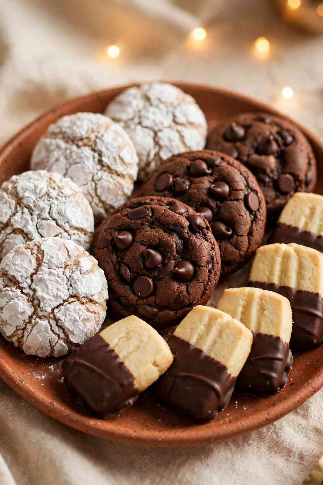
Spiced & gingerbread cookies
Warm spices are the flavor of Christmas — these cookies fill the whole house with that smell.
13. Soft Gingerbread Cookies

Thick, soft gingerbread with a deep molasses flavor and a gentle warmth of ginger, cinnamon, and cloves. Rolled in coarse sugar, they bake up puffed and crackled with soft, chewy centers that stay tender for days. They are the perfect cookie for filling a holiday cookie box.
Ingredients
- 3 cups all-purpose flour
- 1 tablespoon ground ginger
- 2 teaspoons ground cinnamon
- 1/2 teaspoon ground cloves
- 1 teaspoon baking soda
- 1/2 teaspoon salt
- 3/4 cup unsalted butter, softened
- 1 cup granulated sugar
- 1 large egg
- 1/3 cup molasses
- 1 teaspoon vanilla extract
- Coarse sugar, for rolling
Directions
- Whisk the flour, ginger, cinnamon, cloves, baking soda, and salt together in a medium bowl.
- Beat the softened butter and sugar on medium speed until light and fluffy, about 3 minutes.
- Beat in the egg, molasses, and vanilla until smooth and well blended.
- Add the dry ingredients and mix on low just until a soft dough forms. Cover and chill for 1 hour.
- Roll the dough into 1 1/2-inch balls, then roll each in coarse sugar until coated.
- Place 2 inches apart on lined sheets and bake at 350°F for 10 to 12 minutes, until puffed and crackled and the edges look set.
- Cool 5 minutes on the tray, then move to a rack. They stay soft for days in an airtight container.
14. Molasses Cookies
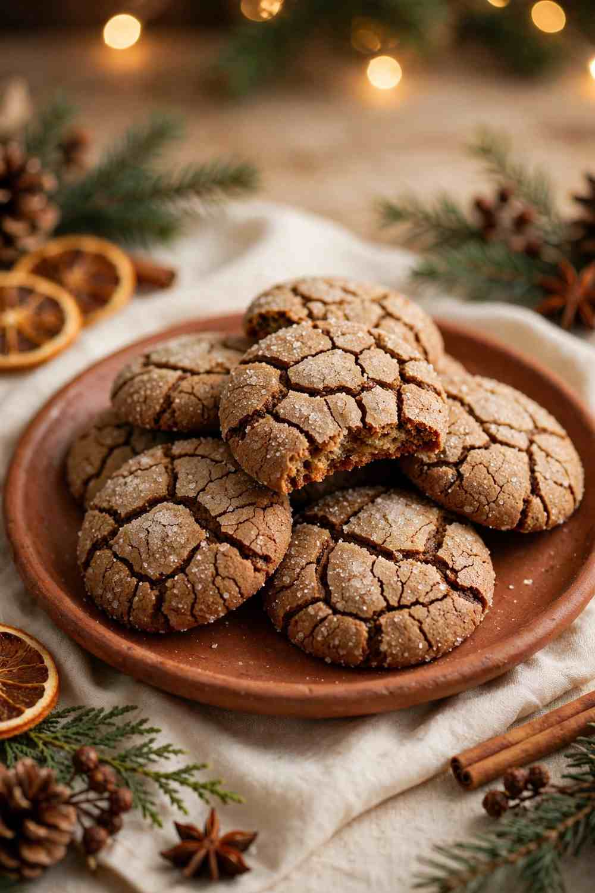
Chewy, dark, and richly spiced, with a crackled sugar top and a soft center that tastes of molasses, cinnamon, and ginger. They are the cookie to bake when you want the whole house to smell like the holidays, and they keep beautifully in a tin for days.
Ingredients
- 2 1/4 cups all-purpose flour
- 2 teaspoons baking soda
- 1 teaspoon ground cinnamon
- 1 teaspoon ground ginger
- 1/2 teaspoon ground cloves
- 1/4 teaspoon salt
- 3/4 cup unsalted butter, softened
- 1 cup granulated sugar
- 1 large egg
- 1/4 cup molasses
- 1/3 cup granulated sugar, for rolling
Directions
- Whisk the flour, baking soda, cinnamon, ginger, cloves, and salt together in a medium bowl.
- Beat the softened butter and sugar on medium speed until light and fluffy, about 3 minutes.
- Beat in the egg and molasses until smooth and dark.
- Add the dry ingredients and mix on low just until a soft dough forms. Cover and chill for 30 minutes.
- Roll the dough into 1 1/2-inch balls, then roll each in the rolling sugar until coated.
- Place 2 inches apart on lined sheets and bake at 350°F for 10 to 12 minutes, until the tops are crackled and the edges look set.
- Cool 5 minutes on the tray, then move to a wire rack to cool completely.
15. Chai-Spiced Cookies
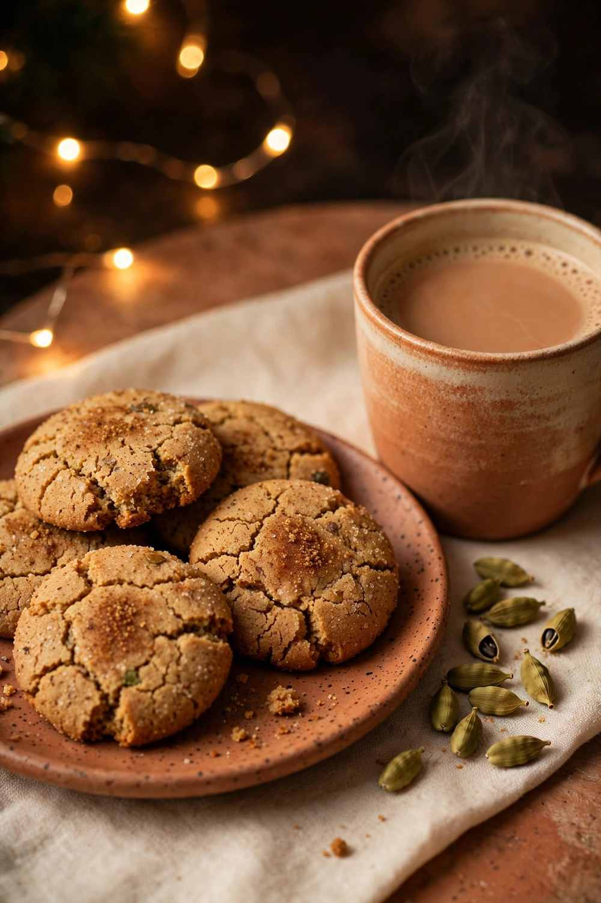
All the warm spices of a chai latte — cinnamon, cardamom, ginger, clove, and a whisper of black pepper — folded into a soft, chewy cookie rolled in cinnamon sugar. The flavor is warm and fragrant without being sharp, and the sugar coating gives each bite a sweet, crackled finish.
Ingredients
- 2 1/2 cups all-purpose flour
- 1 teaspoon baking soda
- 1/2 teaspoon salt
- 2 teaspoons ground cinnamon
- 1 teaspoon ground cardamom
- 1 teaspoon ground ginger
- 1/2 teaspoon ground cloves
- 1/4 teaspoon black pepper
- 1 cup unsalted butter, softened
- 1 1/4 cups granulated sugar
- 1 large egg
- 2 teaspoons vanilla extract
- 1/4 cup cinnamon sugar, for rolling
Directions
- Whisk the flour, baking soda, salt, cinnamon, cardamom, ginger, cloves, and black pepper together in a medium bowl.
- Beat the softened butter and sugar on medium speed until light and fluffy, about 3 minutes.
- Beat in the egg and vanilla until smooth.
- Add the dry ingredients and mix on low just until a soft dough forms. Cover and chill for 30 minutes.
- Roll the dough into 1 1/2-inch balls, then roll each in cinnamon sugar until coated.
- Place 2 inches apart on lined sheets and bake at 350°F for 10 to 12 minutes, until the edges are set and the centers are still soft.
- Cool 5 minutes on the tray, then move to a wire rack to cool completely.
16. Cinnamon Stars

Star-shaped almond cookies with a crisp, sweet meringue top and a warm cinnamon flavor, made the European way with almond flour instead of wheat. They are chewy in the middle, lightly crisp on top, and dusted with snowy powdered sugar. A Christmas tradition for a reason.
Ingredients
- 2 1/2 cups almond flour
- 1 1/2 cups powdered sugar
- 2 teaspoons ground cinnamon
- 2 large egg whites
- 1 teaspoon vanilla extract
- 1/4 teaspoon salt
- 1 cup powdered sugar, for the meringue topping
Directions
- Whisk the almond flour, powdered sugar, and cinnamon together, breaking up lumps.
- In a clean, dry bowl, beat the egg whites and salt until soft peaks form.
- Fold the beaten whites and vanilla into the dry ingredients, mixing gently until a soft, slightly sticky dough forms.
- Shape the dough into a disc, wrap it, and chill for 1 hour until firm.
- On a surface dusted with powdered sugar, roll the dough to 1/4 inch thick and cut into stars. Place on lined sheets.
- Spread a thin layer of the meringue topping over each star with the back of a small spoon.
- Bake at 300°F for 15 to 18 minutes, until the meringue is set and just barely golden at the edges.
- Cool completely on the tray before moving them; they are delicate while warm and firm up as they cool.
17. Pfeffernüsse

Small, spicy German cookies dusted in powdered sugar, with black pepper and warm spices in the dough. They are dense, chewy, and deeply flavored, and they keep for weeks in a tin — and taste better with age, as the spices mellow and deepen. A true old-fashioned Christmas cookie.
Ingredients
- 2 1/4 cups all-purpose flour
- 1 teaspoon baking soda
- 1 teaspoon ground cinnamon
- 1/2 teaspoon ground ginger
- 1/2 teaspoon ground cloves
- 1/4 teaspoon black pepper
- 1/4 teaspoon nutmeg
- 1/4 teaspoon salt
- 1/2 cup unsalted butter, softened
- 3/4 cup packed brown sugar
- 1 large egg
- 1/4 cup molasses
- 1 cup powdered sugar, for rolling
Directions
- Whisk the flour, baking soda, cinnamon, ginger, cloves, black pepper, nutmeg, and salt together in a medium bowl.
- Beat the softened butter and brown sugar on medium speed until light and fluffy, about 3 minutes.
- Beat in the egg and molasses until smooth and dark.
- Add the dry ingredients and mix on low just until a soft dough forms. Cover and chill for 1 hour.
- Roll the dough into 1-inch balls and place 2 inches apart on lined sheets.
- Bake at 350°F for 10 to 12 minutes, until set and puffed and the bottoms are lightly golden.
- While still warm, roll the cookies in powdered sugar until coated, then cool completely on a rack. Store in an airtight tin.
18. Cardamom Shortbread
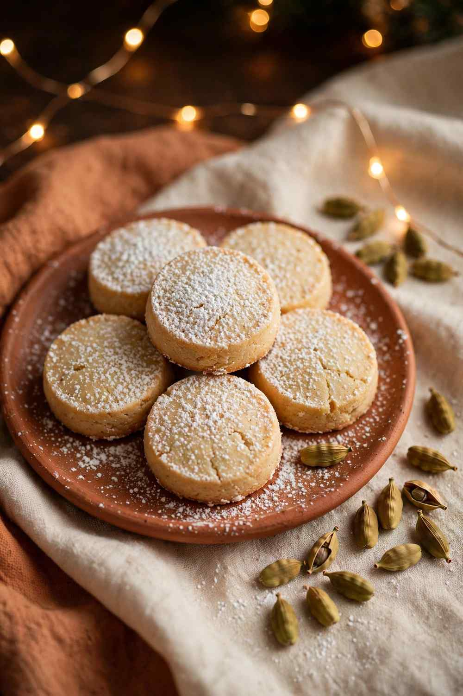
Buttery shortbread with a fragrant cardamom twist that makes it taste quietly exotic. The crumb is tender and sandy, the cardamom is warm and floral, and a sprinkle of coarse sugar adds a gentle crunch. It is the quiet, elegant cookie on the tray — and the one adults reach for first.
Ingredients
- 2 cups all-purpose flour
- 1 teaspoon ground cardamom
- 1/4 teaspoon salt
- 1 cup unsalted butter, softened
- 1/2 cup granulated sugar
- 1 teaspoon vanilla extract
- Coarse sugar, for sprinkling
Directions
- In a medium bowl, whisk the flour, cardamom, and salt together until the cardamom is evenly spread through the flour.
- In a large bowl, beat the softened butter, granulated sugar, and vanilla extract on medium speed until creamy and smooth, about 2 to 3 minutes.
- Add the dry ingredients and mix on low speed just until a soft dough forms and holds together when pressed. Do not overmix.
- On a lightly floured surface, roll the dough to about 1/4 inch thick and cut it into rounds. Place the rounds on lined baking sheets and chill for 20 minutes, until firm.
- Bake at 325°F for 16 to 18 minutes, until the rounds are pale golden at the edges and set in the center.
- While still warm, sprinkle the tops with coarse sugar, then cool completely on the tray. They firm up as they cool.
Filled & sandwich cookies
Two cookies are better than one — especially when something sweet is hiding in the middle.
19. Jam Thumbprints

Buttery cookies with a thumbprint of jam in the center — raspberry, strawberry, or apricot — that bakes into a glossy jewel. The cookie is tender and rich, the jam is bright and tart, and the contrast is perfect. They look like little jewels on the tray and taste even better than they look.
Ingredients
- 2 cups all-purpose flour
- 1/2 teaspoon salt
- 1 cup unsalted butter, softened
- 2/3 cup granulated sugar
- 2 large egg yolks
- 2 teaspoons vanilla extract
- 1/2 cup raspberry, strawberry or apricot jam
Directions
- Whisk the flour and salt together in a medium bowl.
- Beat the softened butter and sugar on medium speed until light and fluffy, about 3 minutes.
- Beat in the egg yolks and vanilla until smooth and creamy.
- Add the flour mixture and mix on low just until a soft dough forms. Cover and chill for 30 minutes.
- Roll into 1-inch balls and place 2 inches apart on lined sheets. Press a thumbprint into each ball.
- Spoon about 1/2 teaspoon of jam into each well, taking care not to overfill, or the jam will bubble over.
- Bake at 350°F for 12 to 14 minutes, until the edges are lightly golden and the jam is bubbling gently.
- Cool completely on the tray, so the jam sets and the cookies firm up before you move them.
20. Linzer Cookies

Delicate almond cookies sandwiched with raspberry jam, the top one cut with a window so the jam shows through like stained glass. Dust them with powdered sugar and they look like they came from a Viennese bakery. They are the prettiest cookie on this list, and one of the tastiest.
Ingredients
- 2 1/2 cups all-purpose flour
- 1 cup almond flour
- 1/2 teaspoon ground cinnamon
- 1/4 teaspoon salt
- 1 cup unsalted butter, softened
- 2/3 cup granulated sugar
- 1 large egg
- 1 teaspoon vanilla extract
- 3/4 cup raspberry jam
- Powdered sugar, for dusting
Directions
- Whisk the all-purpose flour, almond flour, cinnamon, and salt together in a medium bowl.
- Beat the softened butter and sugar on medium speed until light and fluffy, about 3 minutes.
- Beat in the egg and vanilla until smooth.
- Add the dry ingredients and mix on low just until a soft dough forms. Shape into two discs, wrap, and chill for 1 hour.
- Roll one disc at a time to about 1/8 inch thick and cut equal rounds. Cut a small window in half of the rounds. Place all on lined sheets.
- Bake at 350°F for 10 to 12 minutes, until the edges are lightly golden. Cool completely on the tray before handling.
- Spread raspberry jam over each solid round, then press a window round gently on top to make a sandwich.
- Dust generously with powdered sugar just before serving.
21. Peanut Butter Blossoms

Soft peanut butter cookies rolled in sugar and topped with a chocolate kiss that melts slightly into the top as it cools. The cookie is tender and nutty, the kiss adds a rich chocolate finish, and the two together are a cookie-jar classic that kids and adults both love.
Ingredients
- 1 3/4 cups all-purpose flour
- 1 teaspoon baking soda
- 1/2 teaspoon salt
- 1/2 cup unsalted butter, softened
- 1/2 cup creamy peanut butter
- 1/2 cup granulated sugar
- 1/2 cup packed brown sugar
- 1 large egg
- 2 tablespoons milk
- 1 teaspoon vanilla extract
- 1/4 cup granulated sugar, for rolling
- 24 chocolate kisses, unwrapped
Directions
- Whisk the flour, baking soda, and salt together in a medium bowl.
- Beat the softened butter, peanut butter, and both sugars on medium speed until light and fluffy, about 3 minutes.
- Beat in the egg, milk, and vanilla until smooth and creamy.
- Add the dry ingredients and mix on low just until a soft dough forms.
- Roll the dough into 1-inch balls, then roll each in the rolling sugar until coated.
- Place 2 inches apart on lined sheets and bake at 375°F for 8 to 10 minutes, until puffed and lightly golden and the tops are just beginning to crack.
- As soon as the tray comes out of the oven, press a chocolate kiss gently into the center of each cookie.
- Cool completely on the tray, without moving them, so the chocolate sets firm before you stack or store them.
22. Chocolate Sandwich Cookies
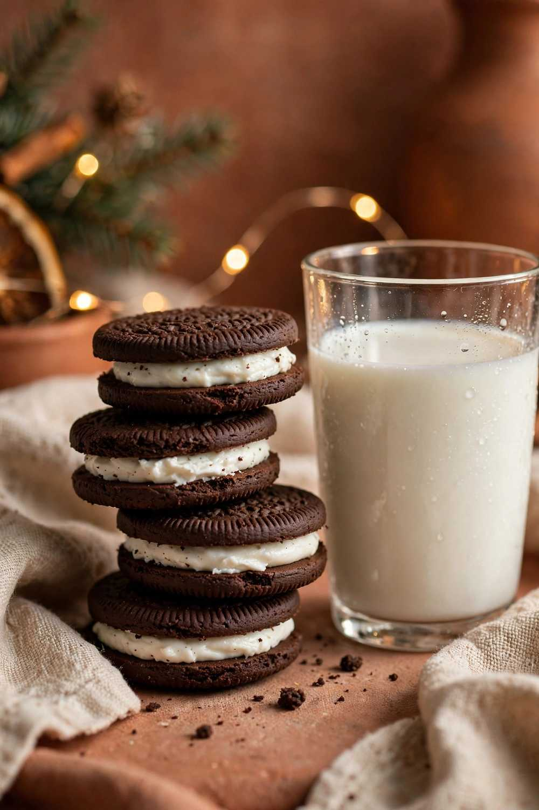
Crisp chocolate cookies with a sweet cream filling — the homemade version of a beloved classic, only better. The cookies are dark and cocoa-rich, the filling is smooth and vanilla-sweet, and the sandwich has a satisfying snap followed by a creamy center. A glass of milk is mandatory.
Ingredients
- 1 1/2 cups all-purpose flour
- 3/4 cup unsweetened cocoa powder
- 1 teaspoon baking soda
- 1/4 teaspoon salt
- 1 cup unsalted butter, softened
- 1 cup granulated sugar
- 1 large egg
- 2 teaspoons vanilla extract
- 1/2 cup unsalted butter, softened (filling)
- 1 1/2 cups powdered sugar
- 1 teaspoon vanilla extract
- 1 tablespoon milk
Directions
- Whisk the flour, cocoa, baking soda, and salt together in a medium bowl.
- Beat the softened butter and sugar on medium speed until light and fluffy, about 3 minutes.
- Beat in the egg and vanilla until smooth.
- Add the dry ingredients and mix on low just until a firm dough forms. Shape into a disc, wrap, and chill for 30 minutes.
- Roll the dough to about 1/8 inch thick on a floured surface and cut into rounds. Place on lined sheets.
- Bake at 350°F for 10 to 12 minutes, until firm and set. Cool completely on the tray, or they will break when sandwiched.
- For the filling, beat the softened butter, powdered sugar, vanilla, and milk until smooth and creamy, about 2 minutes.
- Spread a spoonful of filling onto half the cookies, then press the remaining cookies on top to make sandwiches.
23. Raspberry Almond Cookies

Almond cookies with a bright raspberry filling and a dusting of sugar, finished with sliced almonds for crunch. Tart, nutty, and elegant, they have the flavor of a bakewell tart in cookie form. They are lovely enough for a holiday table and simple enough for a weekday bake.
Ingredients
- 2 cups all-purpose flour
- 1 cup almond flour
- 1/2 teaspoon baking soda
- 1/4 teaspoon salt
- 1 cup unsalted butter, softened
- 3/4 cup granulated sugar
- 1 large egg
- 1 teaspoon almond extract
- 1/2 cup raspberry jam
- 1/2 cup sliced almonds
- Powdered sugar, for dusting
Directions
- In a medium bowl, whisk the all-purpose flour, almond flour, baking soda, and salt together until evenly combined.
- In a large bowl, beat the softened butter and granulated sugar on medium speed until light and fluffy, about 3 minutes.
- Beat in the egg and almond extract until smooth.
- Add the dry ingredients and mix on low speed just until a soft dough forms. Cover and chill for 30 minutes, until firm enough to scoop.
- Scoop rounded tablespoons of dough onto lined baking sheets, spacing them 2 inches apart. Press a thumbprint into each, fill with about 1/2 teaspoon of raspberry jam, and press a few sliced almonds around the edges.
- Bake at 350°F for 12 to 14 minutes, until golden at the edges and the jam is bubbling gently.
- Cool completely on the tray, then dust lightly with powdered sugar before serving.
24. Hazelnut-Stuffed Cookies

Soft, buttery cookies wrapped around a creamy chocolate-hazelnut center that stays molten when warm and soft when cool. They taste like the famous chocolate-hazelnut spread, in cookie form, with chopped hazelnuts on top for crunch. Break one open and watch everyone reach for the tray.
Ingredients
- 2 1/4 cups all-purpose flour
- 1 teaspoon baking soda
- 1/2 teaspoon salt
- 1 cup unsalted butter, softened
- 3/4 cup granulated sugar
- 3/4 cup packed brown sugar
- 2 large eggs
- 2 teaspoons vanilla extract
- 1 cup chocolate-hazelnut spread
- 1/2 cup chopped hazelnuts
Directions
- Whisk the flour, baking soda, and salt together in a medium bowl.
- Beat the softened butter and both sugars on medium speed until light and fluffy, about 3 minutes.
- Beat in the eggs one at a time, then beat in the vanilla until smooth.
- Add the dry ingredients and mix on low just until a soft dough forms.
- Flatten a rounded tablespoon of dough in your palm, add about 1 teaspoon of chocolate-hazelnut spread, and fold the dough around it, sealing the edges.
- Place 2 inches apart on lined sheets and press a few chopped hazelnuts into the top of each one.
- Bake at 350°F for 11 to 13 minutes, until the edges are set and the centers look soft.
- Cool 5 minutes on the tray, then move to a rack. The centers will be soft and creamy inside.
Decorated & festive cookies
These are the showpieces — the cookies that look as good as they taste and make the whole tray look like a celebration.
25. Royal Icing Sugar Cookies
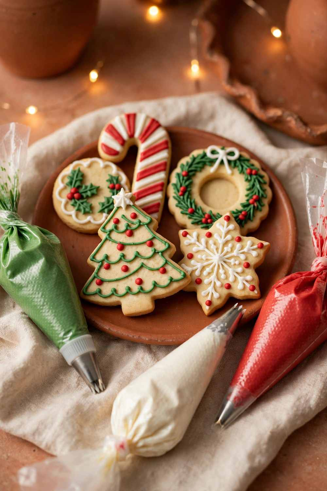
Crisp sugar cookies covered in smooth royal icing and decorated with sprinkles, the showpiece of any Christmas cookie tray. The cookie underneath is buttery and tender, the icing dries to a glossy, hard finish that holds fine detail, and the decorating is half the fun. They take patience, and they are worth every minute.
Ingredients
- 2 3/4 cups all-purpose flour
- 1 teaspoon baking soda
- 1/2 teaspoon baking powder
- 1/2 teaspoon salt
- 1 cup unsalted butter, softened
- 1 1/2 cups granulated sugar
- 1 large egg
- 2 teaspoons vanilla extract
- 3 cups powdered sugar
- 2 large egg whites
- 1 teaspoon lemon juice
- Gel food coloring and sprinkles, for decorating
Directions
- Make the sugar cookie dough as for classic sugar cookies: whisk the dry ingredients, beat the butter and sugar until fluffy, beat in the egg and vanilla, then mix in the flour. Chill for 1 hour.
- Roll to 1/4 inch thick, cut into shapes, and place 2 inches apart on lined sheets. Bake at 350°F for 8 to 10 minutes. Cool completely.
- Beat the powdered sugar, egg whites, and lemon juice on medium speed for 3 to 4 minutes, until smooth, thick, and glossy.
- Tint the icing in small bowls with gel food coloring, keeping one bowl white. Thin some icing with a few drops of water for flooding.
- Pipe an outline around each cookie, flood the inside, and spread it with a toothpick. Add sprinkles while wet.
- Let the icing dry for 8 hours or overnight, until completely hard, before stacking.
26. Candy Cane Cookies

Red and white striped cookies twisted into candy cane shapes, with a cool peppermint flavor and a sparkle of sugar on top. They are fun to make, fun to eat, and they look like Christmas itself. Hang them on the tree, pack them in a gift tin, or eat them straight from the tray.
Ingredients
- 2 1/4 cups all-purpose flour
- 1/2 teaspoon baking powder
- 1/4 teaspoon salt
- 1 cup unsalted butter, softened
- 3/4 cup granulated sugar
- 1 large egg
- 1 teaspoon vanilla extract
- 1/2 teaspoon peppermint extract
- Red gel food coloring
- 1/4 cup granulated sugar, for sprinkling
Directions
- Whisk the flour, baking powder, and salt together in a medium bowl.
- Beat the softened butter and sugar on medium speed until light and fluffy, about 3 minutes.
- Beat in the egg, vanilla, and peppermint extract until smooth.
- Add the flour mixture and mix on low just until a soft dough forms. Divide in half and tint one half red, kneading gently until the color is even.
- Roll red and plain dough into ropes about 4 inches long. Twist them together, bend the top over to make a cane, and place 2 inches apart on lined sheets.
- Bake at 350°F for 9 to 11 minutes, until set and the bottoms are just barely golden.
- While still warm, sprinkle with granulated sugar, then cool completely on the tray before moving them.
27. Christmas Tree Cookies

Tree-shaped cookies iced in green with candy ornaments, the cookie every kid wants to decorate. The sugar cookie underneath is buttery and tender, the green royal icing turns each one into a little tree, and no two trees ever look alike. Let the kids decorate their own and watch the tray come alive.
Ingredients
- 2 3/4 cups all-purpose flour
- 1 teaspoon baking soda
- 1/2 teaspoon baking powder
- 1/2 teaspoon salt
- 1 cup unsalted butter, softened
- 1 1/2 cups granulated sugar
- 1 large egg
- 2 teaspoons vanilla extract
- Green royal icing
- Candy ornaments and sprinkles, for decorating
Directions
- Make the sugar cookie dough as for classic sugar cookies: whisk the dry ingredients, beat the butter and sugar until fluffy, beat in the egg and vanilla, then mix in the flour. Chill for 1 hour.
- Roll the dough to 1/4 inch thick and cut into tree shapes. Place 2 inches apart on lined sheets.
- Bake at 350°F for 8 to 10 minutes, until the edges are set and just barely golden. Cool completely on a rack before icing.
- Ice each tree with green royal icing, spreading it evenly with the back of a small spoon or a piping bag, leaving a small border.
- While the icing is still wet, press candy ornaments into it and scatter sprinkles over the top, like tinsel and lights.
- Let the icing dry undisturbed for 8 hours or overnight, until completely hard, before stacking or packaging.
28. Snowball Cookies
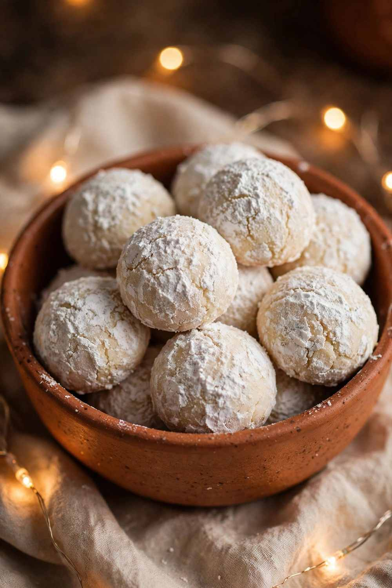
Buttery nut cookies rolled in powdered sugar until they look like little snowballs, with a tender, crumbly texture that melts in your mouth. The nuts add a gentle crunch, the double sugar coating makes them look like fresh snow, and they are gone from the tray in seconds. A Christmas classic.
Ingredients
- 2 cups all-purpose flour
- 1 cup finely chopped pecans or walnuts
- 1 cup unsalted butter, softened
- 1/2 cup powdered sugar
- 1 teaspoon vanilla extract
- 1/4 teaspoon salt
- 1 cup powdered sugar, for rolling
Directions
- In a large bowl, beat the softened butter, powdered sugar, and vanilla extract on medium speed until creamy and smooth, about 2 to 3 minutes.
- Add the flour, chopped pecans or walnuts, and salt, and mix on low speed just until a soft dough forms and the nuts are evenly spread through it.
- Roll the dough into small balls about 1 inch across, place them on lined baking sheets, and chill for 30 minutes, until firm.
- Bake at 350°F for 12 to 14 minutes, until lightly golden at the bottoms and set on top.
- While still warm, roll each cookie gently in powdered sugar until fully coated, then set it on a wire rack.
- Once completely cool, roll the cookies in powdered sugar a second time for a thick, snowy coating, and store in an airtight container.
29. Stained-Glass Cookies

Spiced cookies with a window of melted candy in the center that glows like stained glass when you hold it up to the light. The cookie is warmly spiced with cinnamon and ginger, the candy window is jewel-bright red and green, and they are beautiful enough to hang on the tree — if they last that long.
Ingredients
- 2 3/4 cups all-purpose flour
- 1 teaspoon ground cinnamon
- 1/2 teaspoon ground ginger
- 1 teaspoon baking soda
- 1/2 teaspoon salt
- 3/4 cup unsalted butter, softened
- 3/4 cup packed brown sugar
- 1 large egg
- 1/3 cup molasses
- 1 cup crushed hard candies, red and green
Directions
- Whisk the flour, cinnamon, ginger, baking soda, and salt together in a medium bowl.
- Beat the softened butter and brown sugar on medium speed until light and fluffy, about 3 minutes.
- Beat in the egg and molasses until smooth and dark.
- Add the dry ingredients and mix on low just until a firm dough forms. Shape into a disc, wrap, and chill for 1 hour.
- Roll to 1/4 inch thick, cut out shapes, and cut a window in each. Place on lined sheets.
- Fill each window with crushed hard candies, keeping the candy inside the window so it does not stick to the sheet.
- Bake at 350°F for 9 to 11 minutes, until set and the candy has melted into a glassy window.
- Cool completely on the tray, so the candy windows harden and the cookies do not break.
30. Meringue Kisses
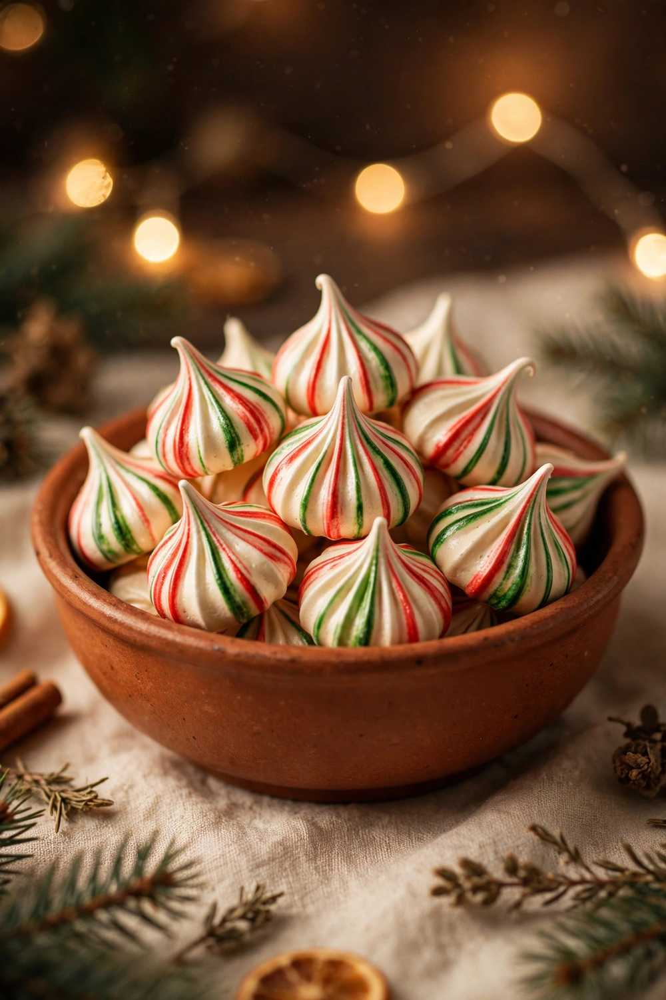
Light, crisp meringue kisses swirled with red and green stripes, sweet and airy with a melt-in-your-mouth texture. They are the lightest cookie on the tray, they keep for days in a dry tin, and they look like little holiday jewels piled in a bowl. A perfect finish to any cookie tray.
Ingredients
- 4 large egg whites, at room temperature
- 1 cup granulated sugar
- 1/4 teaspoon cream of tartar
- 1 teaspoon vanilla extract
- Red and green gel food coloring
Directions
- Make sure your bowl and beaters are completely clean and dry, with no trace of grease. Beat the egg whites and cream of tartar on medium speed until soft peaks form.
- Add the sugar one spoonful at a time, beating well after each addition, until the meringue is stiff, glossy, and smooth. This takes about 5 to 7 minutes.
- Beat in the vanilla on low speed, just until combined.
- Paint red and green stripes inside a piping bag fitted with a star tip, then fill it with meringue.
- Pipe 1 1/2-inch kisses onto lined sheets, 1 inch apart. Bake at 200°F for 90 minutes, until crisp and dry.
- Turn the oven off and leave the kisses inside with the door closed for 1 hour, so they dry out completely.
- Cool completely before storing in an airtight container in a dry place.
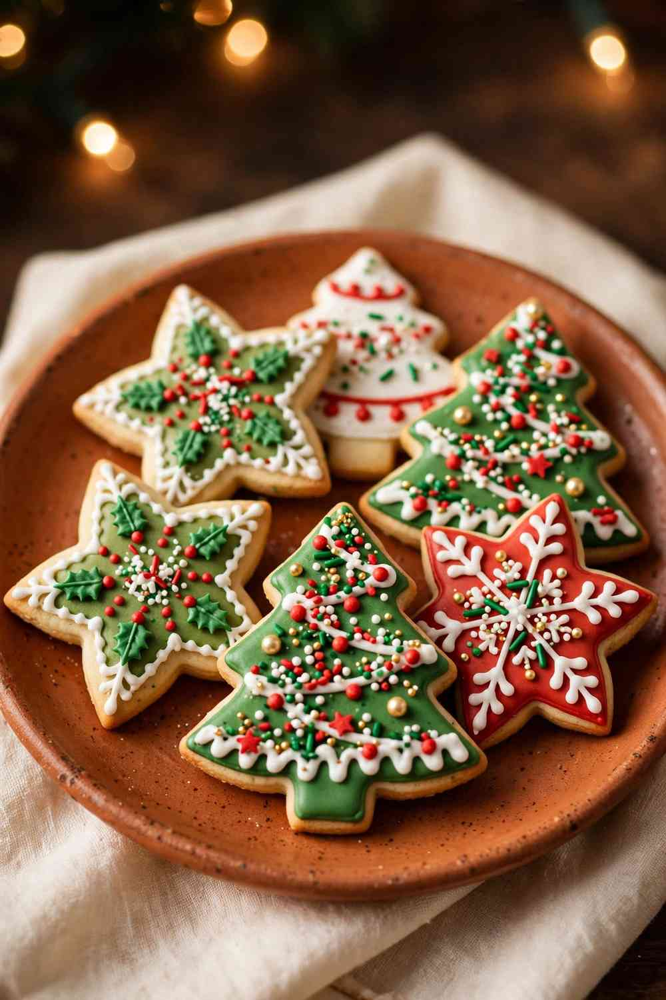
Baking & storage tips
Chill your dough before baking — it keeps cookies from spreading and makes cut-outs hold their shape. Bake one tray at a time in the center of the oven, and let cookies cool on the tray for a few minutes before moving them so they set. Store crisp cookies and soft cookies in separate containers, or the crisp ones will go soft. Most Christmas cookies keep for a week in an airtight container, and most doughs freeze well — so you can bake in batches across December and always have fresh cookies ready.
Related articles
More roundups from the same table:
- 25+ No-Bake Christmas Desserts for a Crowd — truffles, cheesecakes, bars and treats.
- 30+ Vintage Christmas Cookie Recipes — old-fashioned cookies from grandma’s kitchen.
- 25+ Christmas Snowball Cookie Recipes — buttery snowball cookies in every flavor.
- 25+ Christmas Breakfast Recipes for a Cozy Holiday Morning — casseroles, pancakes, cinnamon rolls and make-ahead bakes.
Keep exploring
- Browse the Desserts & Baking roundups — cookies, cakes, pies and sweet bakes.
- Browse all six categories — breakfast, lunch and dinner, desserts, air fryer, healthy recipes, and appetizers.
- More about the kitchen — what The Tasty Recipe Co is and how it works.
About The Tasty Recipe Co: Learn how we research, organize and review our food collections — see our About Us and Editorial Policy pages.
Recipe results can vary with ingredients, equipment, and technique. See our Disclaimer for food-safety and allergy notes.